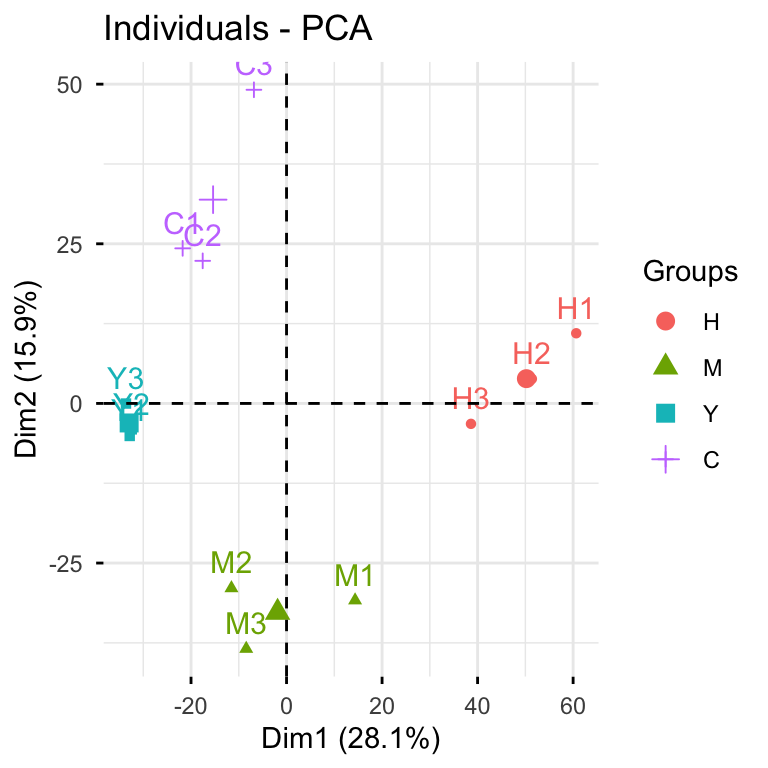
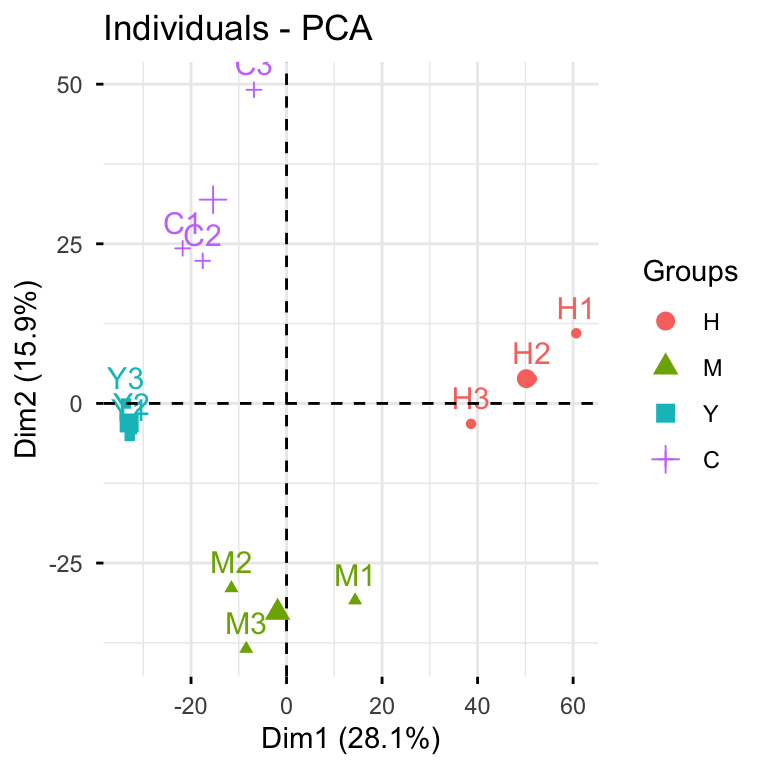
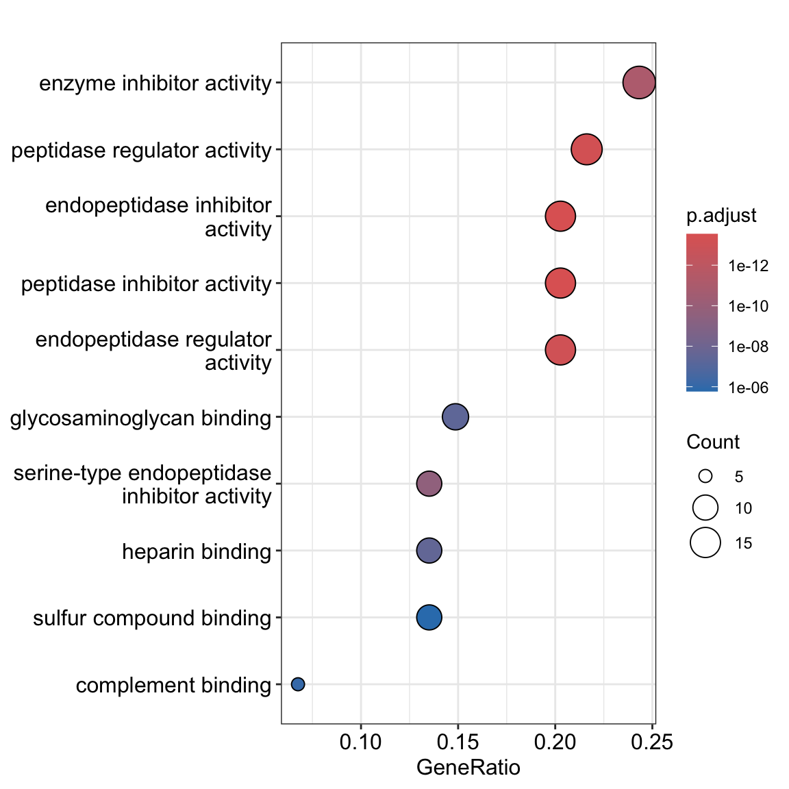
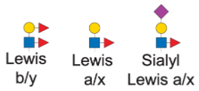

library(tidyverse)
#> ── Attaching core tidyverse packages ──────────────────────── tidyverse 2.0.0 ──
#> ✔ dplyr 1.2.1 ✔ readr 2.2.0
#> ✔ forcats 1.0.1 ✔ stringr 1.6.0
#> ✔ ggplot2 4.0.3 ✔ tibble 3.3.1
#> ✔ lubridate 1.9.5 ✔ tidyr 1.3.2
#> ✔ purrr 1.2.2
#> ── Conflicts ────────────────────────────────────────── tidyverse_conflicts() ──
#> ✖ dplyr::filter() masks stats::filter()
#> ✖ dplyr::lag() masks stats::lag()
#> ℹ Use the conflicted package (<http://conflicted.r-lib.org/>) to force all conflicts to become errorsCase Study: Glycoproteomics
An end-to-end glycoproteomics analysis with Glycoverse.
This vignette walks you through a complete glycoproteomics analysis using glycoverse. We’ll explore the full spectrum of glycoproteomics data analysis, from data loading and preprocessing to statistical analysis and visualization. We’ll also dive into advanced glycan structure analysis, including motif quantification and derived trait analysis. Ready to dive in? Let’s go!
Heads up: glycoverse is built on tidy principles throughout. If you’re new to tidyverse data analysis, we highly recommend checking out Hadley Wickham’s excellent R for Data Science. Trust us, it’s worth the investment!
Quick readiness check:
- What’s a
tibble? - How do you filter rows in a
tibble? - What’s the modern alternative to
forloops? - What’s the
|>operator? - What makes data “tidy”?
TL;DR
In case you’re in a hurry…
# Load the packages
library(tidyverse)
library(glycoverse)
# Preprocess the data
clean_exp <- auto_clean(real_experiment)
# Perform PCA
pca_res <- gly_pca(clean_exp)
autoplot(pca_res)
# Perform differential expression analysis
limma_res <- gly_limma(clean_exp)
get_tidy_result(limma_res)
# Perform motif analysis
motifs <- c(
lewis_by = "dHex(??-?)Hex(??-?)[dHex(??-?)]HexNAc(??-",
lewis_ax = "Hex(??-?)[dHex(??-?)]HexNAc(??-",
sia_lewis_ax = "NeuAc(??-?)Hex(??-?)[dHex(??-?)]HexNAc(??-"
)
motif_exp <- quantify_motifs(clean_exp, motifs)
motif_anova_res <- gly_anova(motif_exp)
get_tidy_result(motif_anova_res, "main_test")
# Perform derived trait analysis
trait_exp <- derive_traits(clean_exp)
trait_anova_res <- gly_anova(trait_exp)
get_tidy_result(trait_anova_res, "main_test")Loading the Packages
We first load the tidyverse package, as usual.
Just like tidyverse, glycoverse is a meta-package that loads a collection of specialized packages all at once.
library(glycoverse)
#> ── Attaching core glycoverse packages ────────────────────── glycoverse 0.3.1 ──
#> ✔ glyclean 0.15.0 ✔ glyparse 0.7.1
#> ✔ glydet 0.12.0 ✔ glyread 0.11.0
#> ✔ glydraw 0.6.2 ✔ glyrepr 0.13.0
#> ✔ glyexp 0.15.0 ✔ glystats 0.11.0
#> ✔ glymotif 0.17.0 ✔ glyvis 0.6.0
#> ── Conflicts ───────────────────────────────────────── glycoverse_conflicts() ──
#> ✖ glyclean::aggregate() masks stats::aggregate()
#> ✖ dplyr::filter() masks stats::filter()
#> ✖ lubridate::intersect() masks dplyr::intersect(), base::intersect()
#> ✖ dplyr::lag() masks stats::lag()
#> ✖ lubridate::setdiff() masks dplyr::setdiff(), base::setdiff()
#> ✖ dplyr::setequal() masks base::setequal()
#> ✖ lubridate::union() masks dplyr::union(), base::union()
#> ℹ Use the conflicted package (<http://conflicted.r-lib.org/>) to force all conflicts to become errorsReading the Data
Data import is typically your first step in any analysis. For this tutorial, we’ll use the real_experiment dataset that comes with glyexp. This is a real-world N-glycoproteomics dataset from 12 patients across four liver conditions: healthy controls (H), hepatitis (M), cirrhosis (Y), and hepatocellular carcinoma (C), with 3 samples per condition.
real_experiment
#>
#> ── Glycoproteomics Experiment ──────────────────────────────────────────────────
#> ℹ Expression matrix: 12 samples, 4262 variables
#> ℹ Sample information fields: group <fct>
#> ℹ Variable information fields: peptide <chr>, peptide_site <int>, protein <chr>, protein_site <int>, gene <chr>, glycan_composition <comp>, glycan_structure <struct>For your own projects, the glyread package can import data from virtually any mainstream glycoproteomics software—pGlyco3, MSFragger-Glyco, Byonic, you name it. Each software has its own dedicated import function. For instance, data from pGlyco3 with pGlycoQuant quantification can be loaded using read_pglyco3_pglycoquant(). Check out Get Started with glyread for the full rundown.
The real_experiment object (like all outputs from glyread functions) is an experiment() object. If you’ve worked with SummarizedExperiment from Bioconductor, think of experiment() as its tidy cousin. Essentially, it’s a smart data container that manages three key components:
- Expression matrix: quantitative data with samples as columns and variables as rows
- Sample information: a tibble with sample metadata (group, batch, demographics, etc.)
- Variable information: a tibble with feature metadata (proteins, peptides, glycan compositions, etc.)
You can get these data components by using get_expr_mat(), get_sample_info(), and get_var_info().
get_expr_mat(real_experiment)[1:5, 1:5]
#> C1 C2 C3
#> P08185-176-Hex(5)HexNAc(4)NeuAc(2) NA NA 10655.62
#> P04196-344-Hex(5)HexNAc(4)NeuAc(1)-1 414080036 609889761 78954431.49
#> P04196-344-Hex(5)HexNAc(4) 581723113 604842244 167889901.32
#> P04196-344-Hex(5)HexNAc(4)NeuAc(1)-2 3299649335 2856490652 957651065.86
#> P10909-291-Hex(6)HexNAc(5)-1 30427048 34294394 6390129.81
#> H1 H2
#> P08185-176-Hex(5)HexNAc(4)NeuAc(2) 3.105412e+04 NA
#> P04196-344-Hex(5)HexNAc(4)NeuAc(1)-1 NA 11724908
#> P04196-344-Hex(5)HexNAc(4) 6.977076e+08 703566323
#> P04196-344-Hex(5)HexNAc(4)NeuAc(1)-2 2.600523e+09 3229968280
#> P10909-291-Hex(6)HexNAc(5)-1 5.159133e+07 37479075get_sample_info(real_experiment)
#> # A tibble: 12 × 2
#> sample group
#> <chr> <fct>
#> 1 C1 C
#> 2 C2 C
#> 3 C3 C
#> 4 H1 H
#> 5 H2 H
#> 6 H3 H
#> 7 M1 M
#> 8 M2 M
#> 9 M3 M
#> 10 Y1 Y
#> 11 Y2 Y
#> 12 Y3 Yget_var_info(real_experiment)
#> # A tibble: 4,262 × 8
#> variable peptide peptide_site protein protein_site gene glycan_composition
#> <chr> <chr> <int> <chr> <int> <chr> <comp>
#> 1 P08185-17… NKTQGK 1 P08185 176 SERP… Hex(5)HexNAc(4)Ne…
#> 2 P04196-34… HSHNNN… 5 P04196 344 HRG Hex(5)HexNAc(4)Ne…
#> 3 P04196-34… HSHNNN… 5 P04196 344 HRG Hex(5)HexNAc(4)
#> 4 P04196-34… HSHNNN… 5 P04196 344 HRG Hex(5)HexNAc(4)Ne…
#> 5 P10909-29… HNSTGC… 2 P10909 291 CLU Hex(6)HexNAc(5)
#> 6 P04196-34… HSHNNN… 5 P04196 344 HRG Hex(5)HexNAc(4)Ne…
#> 7 P04196-34… HSHNNN… 6 P04196 345 HRG Hex(5)HexNAc(4)
#> 8 P04196-34… HSHNNN… 5 P04196 344 HRG Hex(5)HexNAc(4)dH…
#> 9 P04196-34… HSHNNN… 5 P04196 344 HRG Hex(4)HexNAc(3)
#> 10 P04196-34… HSHNNN… 5 P04196 344 HRG Hex(4)HexNAc(4)Ne…
#> # ℹ 4,252 more rows
#> # ℹ 1 more variable: glycan_structure <struct>For a deeper dive into experiment() objects, check out Get Started with glyexp.
Data Preprocessing
Raw quantification data needs preprocessing before analysis—that’s just a fact of life in omics. Typical steps include normalization, missing value imputation, and batch effect correction. Rather than making you implement these tedious steps manually, glyclean provides a comprehensive preprocessing pipeline. Just call auto_clean() on your experiment() object and you’re good to go.
clean_exp <- auto_clean(real_experiment)
#>
#> ── Removing variables with too many missing values ──
#>
#> ℹ Applying preset "discovery"...
#> ℹ Total removed: 24 (0.56%) variables.
#> ✔ Variable removal completed.
#>
#> ── Normalizing data ──
#>
#> ℹ Normalization method: `normalize_median()`
#> ℹ Reason: default for "glycoproteomics".
#> ✔ Normalization completed.
#>
#> ── Imputing missing values ──
#>
#> ℹ Imputation method: `impute_min_prob()`
#> ℹ Reason: default for "glycoproteomics" with n_samples < 30.
#> ✔ Imputation completed.
#>
#> ── Aggregating data ──
#>
#> ℹ Aggregating to "gfs" level
#> ✔ Aggregation completed.
#>
#> ── Normalizing data again ──
#>
#> ℹ Normalization method: `normalize_median()`
#> ℹ Reason: default for "glycoproteomics".
#> ✔ Normalization completed.
#>
#> ── Correcting batch effects ──
#>
#> ℹ Batch column batch not found in sample_info. Skipping batch correction.
#> ✔ Batch correction completed.Your data is now analysis-ready!
Want to customize the preprocessing steps? See Get Started with glyclean for the full toolkit.
Statistical Analysis and Visualization
Time for the fun part—statistical analysis and visualization! We’ll use glystats for the number crunching and glyvis to make sense of the results visually.
Let’s kick off with PCA to get a bird’s-eye view of our data structure.
plot_pca(clean_exp) # from `glyvis`
glyvis isn’t designed for publication-ready figures, but it’s perfect for quick exploratory visualization. Behind the scenes, plot_pca() calls gly_pca() from glystats and renders the results.
You can also break this down into separate steps:
pca_res <- gly_pca(clean_exp) # from `glystats`
autoplot(pca_res) # from `glyvis`
# you can also use `plot_pca(pca_res)`We actually recommend the two-step approach, since it gives you more flexibility with the results. You can create custom ggplot2 visualizations for publications or extract the underlying data when reviewers ask for it.
glystats covers virtually all standard omics analyses. All functions follow the same naming pattern: gly_xxx()—think gly_anova(), gly_ttest(), gly_roc(), gly_cox(), gly_wgcna(), and so on. They all take an experiment() object as their first argument.
The return format is consistent across all functions—a list with two components:
tidy_result: cleaned-up tibbles in tidy format. We’ve done the heavy lifting of organizing messy statistical output for you.raw_result: the original statistical objects. These are available when you need to dig deeper or perform advanced analyses.
glystats provides two helper functions to get the tidy result tibble and the raw result list from a glystats result object: get_tidy_result() and get_raw_result(). Let’s now see what the samples tibble looks like:
get_tidy_result(pca_res, "samples") # many tibbles, so we specify one of them
#> # A tibble: 144 × 4
#> sample group PC value
#> <chr> <fct> <dbl> <dbl>
#> 1 C1 C 1 -21.8
#> 2 C1 C 2 24.3
#> 3 C1 C 3 1.75
#> 4 C1 C 4 1.01
#> 5 C1 C 5 11.6
#> 6 C1 C 6 -25.2
#> 7 C1 C 7 -4.42
#> 8 C1 C 8 3.35
#> 9 C1 C 9 29.1
#> 10 C1 C 10 -7.58
#> # ℹ 134 more rowsNotice the “group” column? That’s glystats being helpful— it automatically pulls relevant metadata from your experiment() object and includes it in the results wherever it makes sense.
Back to that autoplot() magic we saw earlier. It automatically recognizes different glystats result types and plots accordingly— no manual specification needed. The plots won’t win any beauty contests, but they’ll get your data insights across fast.
The PCA clearly shows that our samples cluster nicely by condition—always a good sign! Now let’s dive into differential expression analysis using the tried-and-true limma package.
limma_res <- gly_limma(clean_exp, contrasts = "H_vs_C") # from `glystats`
#> ℹ Number of groups: 4
#> ℹ Groups: "H", "M", "Y", and "C"
#> ℹ Pairwise comparisons will be performed, with levels coming first as reference groups.
get_tidy_result(limma_res) # only one tibble here
#> # A tibble: 3,979 × 14
#> variable protein glycan_composition glycan_structure protein_site gene
#> <chr> <chr> <comp> <struct> <int> <chr>
#> 1 P08185-176-He… P08185 Hex(5)HexNAc(4)Ne… NeuAc(??-?)Hex(… 176 SERP…
#> 2 P04196-344-He… P04196 Hex(5)HexNAc(4)Ne… NeuAc(??-?)Hex(… 344 HRG
#> 3 P04196-344-He… P04196 Hex(5)HexNAc(4) Hex(??-?)HexNAc… 344 HRG
#> 4 P04196-344-He… P04196 Hex(5)HexNAc(4)Ne… NeuAc(??-?)Hex(… 344 HRG
#> 5 P10909-291-He… P10909 Hex(6)HexNAc(5) Hex(??-?)HexNAc… 291 CLU
#> 6 P04196-344-He… P04196 Hex(5)HexNAc(4)Ne… NeuAc(??-?)Hex(… 344 HRG
#> 7 P04196-345-He… P04196 Hex(5)HexNAc(4) Hex(??-?)HexNAc… 345 HRG
#> 8 P04196-344-He… P04196 Hex(5)HexNAc(4)dH… dHex(??-?)Hex(?… 344 HRG
#> 9 P04196-344-He… P04196 Hex(4)HexNAc(3) Hex(??-?)HexNAc… 344 HRG
#> 10 P04196-344-He… P04196 Hex(4)HexNAc(4)Ne… NeuAc(??-?)Hex(… 344 HRG
#> # ℹ 3,969 more rows
#> # ℹ 8 more variables: log2fc <dbl>, AveExpr <dbl>, t <dbl>, p_val <dbl>,
#> # p_adj <dbl>, b <dbl>, ref_group <chr>, test_group <chr>Excellent! Now let’s identify significantly differentially expressed glycoforms between HCC and healthy samples, then see what biological pathways they’re involved in.
library(glyfun)
limma_res |>
enrich_ora_go(dea_p_cutoff = 0.05, dea_log2fc_cutoff = c(-2, 2)) |>
clusterProfiler::dotplot()
#>
#>
#> 'select()' returned 1:1 mapping between keys and columns
And that’s it—pathway enrichment in just a few lines! We used enrich_ora_go() from glyfun to perform GO over-representation analysis on the significant hits from our gly_limma() results. glyfun is not a core glycoverse package, so you need to load it separately.
For the full statistical arsenal, check out Get Started with glystats and Get Started with glyvis. To explore more functional enrichment options, see Get Started with glyfun.
Advanced Motif Analysis
Up to now, we’ve covered standard glycoproteomics workflows. While glycoverse certainly streamlines these analyses, it truly shines when it comes to advanced glycan structure analysis.
Before diving into motifs, let’s get acquainted with glyrepr::glycan_structure() vectors.
clean_exp |>
get_var_info() |>
pull(glycan_structure)
#> <glycan_structure[3979]>
#> [1] NeuAc(??-?)Hex(??-?)HexNAc(??-?)Hex(??-?)[NeuAc(??-?)Hex(??-?)HexNAc(??-?)Hex(??-?)]Hex(??-?)HexNAc(??-?)HexNAc(??-
#> [2] NeuAc(??-?)Hex(??-?)HexNAc(??-?)[HexNAc(??-?)]Hex(??-?)[Hex(??-?)Hex(??-?)]Hex(??-?)HexNAc(??-?)HexNAc(??-
#> [3] Hex(??-?)HexNAc(??-?)Hex(??-?)[Hex(??-?)HexNAc(??-?)Hex(??-?)]Hex(??-?)HexNAc(??-?)HexNAc(??-
#> [4] NeuAc(??-?)Hex(??-?)HexNAc(??-?)Hex(??-?)[Hex(??-?)HexNAc(??-?)Hex(??-?)]Hex(??-?)HexNAc(??-?)HexNAc(??-
#> [5] Hex(??-?)HexNAc(??-?)Hex(??-?)HexNAc(??-?)Hex(??-?)[Hex(??-?)HexNAc(??-?)Hex(??-?)]Hex(??-?)HexNAc(??-?)HexNAc(??-
#> [6] NeuAc(??-?)Hex(??-?)HexNAc(??-?)Hex(??-?)[NeuAc(??-?)Hex(??-?)HexNAc(??-?)Hex(??-?)]Hex(??-?)HexNAc(??-?)HexNAc(??-
#> [7] Hex(??-?)HexNAc(??-?)Hex(??-?)[Hex(??-?)HexNAc(??-?)Hex(??-?)]Hex(??-?)HexNAc(??-?)HexNAc(??-
#> [8] dHex(??-?)Hex(??-?)HexNAc(??-?)Hex(??-?)[dHex(??-?)Hex(??-?)HexNAc(??-?)Hex(??-?)]Hex(??-?)HexNAc(??-?)HexNAc(??-
#> [9] Hex(??-?)HexNAc(??-?)Hex(??-?)[Hex(??-?)]Hex(??-?)HexNAc(??-?)HexNAc(??-
#> [10] NeuAc(??-?)Hex(??-?)HexNAc(??-?)Hex(??-?)[HexNAc(??-?)Hex(??-?)]Hex(??-?)HexNAc(??-?)HexNAc(??-
#> ... (3969 more not shown)
#> # Unique structures: 967Just like integer() and character(), glycan_structure() is a specialized vector type. Some software (like pGlyco3 and StrucGP) outputs structural information as text strings. When you import this data using glyread, the glyparse package automatically converts these strings into proper glycan_structure() vectors and stores them in the variable information tibble. Note that not all software provides structural data—some only give compositions.
Fortunately, our example dataset includes structural information, opening up a world of advanced analytical possibilities. Let’s explore motif analysis.
Quick note: The printed structures use IUPAC-condensed notation, which we’ll also use for defining motifs below. Don’t worry if it looks intimidating—we’ll include visual diagrams to help. That said, if you’re planning to do serious structural analysis, learning IUPAC-condensed notation is worth the investment. Check out this guide to get started—it’s easier than it looks!
Lewis antigen epitopes are common structural motifs found on N-glycans. Ignoring linkage specificity, we can define three main Lewis motif families:

Here’s how we express these motifs in IUPAC-condensed notation:
motifs <- c(
lewis_by = "dHex(??-?)Hex(??-?)[dHex(??-?)]HexNAc(??-",
lewis_ax = "Hex(??-?)[dHex(??-?)]HexNAc(??-",
sia_lewis_ax = "NeuAc(??-?)Hex(??-?)[dHex(??-?)]HexNAc(??-"
)A couple of important points:
- We’re using generic monosaccharide names (“Hex” vs. “Glc”) to match typical glycoproteomics data resolution
- The “??-?” represents unknown linkages—a common limitation in mass spectrometry data
This level of structural ambiguity is typical in glycoproteomics. The key is matching your motif definitions to your data’s resolution.
Here’s our research question: How many glycosites show differential Lewis antigen expression across conditions? Without glycoverse, this would be a nightmare to tackle manually. Take a moment to imagine the pain of doing this by hand!
Now, the glycoverse solution:
motif_anova_res <- clean_exp |>
quantify_motifs(motifs) |> # quantify these motifs
gly_anova() # and perform ANOVA
#> ℹ Number of groups: 4
#> ℹ Groups: "H", "M", "Y", and "C"
#> ℹ Pairwise comparisons will be performed, with levels coming first as reference groups.
get_tidy_result(motif_anova_res, "main_test")
#> # A tibble: 828 × 15
#> variable protein protein_site trait gene motif_structure term df
#> <chr> <chr> <int> <chr> <chr> <struct> <chr> <dbl>
#> 1 A6NJW9-49-lewis… A6NJW9 49 lewi… CD8B2 dHex(??-?)Hex(… group 3
#> 2 A6NJW9-49-lewis… A6NJW9 49 lewi… CD8B2 Hex(??-?)[dHex… group 3
#> 3 A6NJW9-49-sia_l… A6NJW9 49 sia_… CD8B2 NeuAc(??-?)Hex… group 3
#> 4 O14786-150-lewi… O14786 150 lewi… NRP1 dHex(??-?)Hex(… group 3
#> 5 O14786-150-lewi… O14786 150 lewi… NRP1 Hex(??-?)[dHex… group 3
#> 6 O14786-150-sia_… O14786 150 sia_… NRP1 NeuAc(??-?)Hex… group 3
#> 7 O43866-226-lewi… O43866 226 lewi… CD5L dHex(??-?)Hex(… group 3
#> 8 O43866-226-lewi… O43866 226 lewi… CD5L Hex(??-?)[dHex… group 3
#> 9 O43866-226-sia_… O43866 226 sia_… CD5L NeuAc(??-?)Hex… group 3
#> 10 O75437-244-lewi… O75437 244 lewi… ZNF2… dHex(??-?)Hex(… group 3
#> # ℹ 818 more rows
#> # ℹ 7 more variables: sumsq <dbl>, meansq <dbl>, statistic <dbl>, p_val <dbl>,
#> # p_adj <dbl>, effect_size <dbl>, post_hoc <chr>quantify_motifs() transforms your data into a new experiment() object. Instead of quantifying individual glycans per glycosite, you now have motif abundances per glycosite across samples. Since it’s still an experiment() object, all glystats functions work seamlessly—including gly_anova().
Now we can answer our question using standard tidyverse operations, since motif_anova_res$tidy_result$main_test is just a regular tibble:
motif_anova_res |>
get_tidy_result("main_test") |>
filter(p_adj < 0.05) |>
group_by(trait) |>
count()
#> # A tibble: 3 × 2
#> # Groups: trait [3]
#> trait n
#> <chr> <int>
#> 1 lewis_ax 14
#> 2 lewis_by 4
#> 3 sia_lewis_ax 16Want the specific glycosites with significant Lewis a/x epitopes? Easy:
motif_anova_res |>
get_tidy_result("main_test") |>
filter(p_adj < 0.05, trait == "lewis_ax") |>
select(protein, protein_site)
#> # A tibble: 14 × 2
#> protein protein_site
#> <chr> <int>
#> 1 P00738 241
#> 2 P01011 271
#> 3 P01042 294
#> 4 P01877 205
#> 5 P02675 394
#> 6 P02679 78
#> 7 P02763 93
#> 8 P03952 494
#> 9 P04114 3411
#> 10 P05090 98
#> 11 P05156 177
#> 12 P10909 86
#> 13 P20851 64
#> 14 Q08380 125glymotif has much more to offer beyond these examples. Dive deeper with Get Started with glymotif.
Derived Trait Analysis
Let’s wrap up with derived traits—a clever analytical approach developed by the N-glycomics community for glycome characterization. Classic examples include:
- High-mannose glycan proportion
- Core-fucosylation rate within complex glycans
- Average sialylation per galactose residue
glydet adapts this concept for glycoproteomics by treating each glycosite as its own mini-glycome. This enables site-specific trait calculation and much richer biological insights.
Using glydet couldn’t be simpler:
trait_exp <- derive_traits(clean_exp) # from `glydet`
trait_exp
#>
#> ── Traitproteomics Experiment ──────────────────────────────────────────────────
#> ℹ Expression matrix: 12 samples, 3864 variables
#> ℹ Sample information fields: group <fct>
#> ℹ Variable information fields: protein <chr>, protein_site <int>, trait <chr>, gene <chr>, explanation <chr>That’s it! Just like quantify_motifs(), derive_traits() creates a new experiment() object, but now with trait values per glycosite per sample.
The variable information shows what we’re working with:
get_var_info(trait_exp)
#> # A tibble: 3,864 × 6
#> variable protein protein_site trait gene explanation
#> <chr> <chr> <int> <chr> <chr> <chr>
#> 1 A6NJW9-49-TM A6NJW9 49 TM CD8B2 Proportion of high-mannose gl…
#> 2 A6NJW9-49-TH A6NJW9 49 TH CD8B2 Proportion of hybrid glycans …
#> 3 A6NJW9-49-TC A6NJW9 49 TC CD8B2 Proportion of complex glycans…
#> 4 A6NJW9-49-MM A6NJW9 49 MM CD8B2 Abundance-weighted mean of ma…
#> 5 A6NJW9-49-CA2 A6NJW9 49 CA2 CD8B2 Proportion of bi-antennary gl…
#> 6 A6NJW9-49-CA3 A6NJW9 49 CA3 CD8B2 Proportion of tri-antennary g…
#> 7 A6NJW9-49-CA4 A6NJW9 49 CA4 CD8B2 Proportion of tetra-antennary…
#> 8 A6NJW9-49-TF A6NJW9 49 TF CD8B2 Proportion of fucosylated gly…
#> 9 A6NJW9-49-TFc A6NJW9 49 TFc CD8B2 Proportion of core-fucosylate…
#> 10 A6NJW9-49-TFa A6NJW9 49 TFa CD8B2 Proportion of arm-fucosylated…
#> # ℹ 3,854 more rowsThe “trait” column lists all the derived traits we can analyze.
glydet comes with a comprehensive set of built-in traits:
TM: Proportion of high-mannose glycansTH: Proportion of hybrid glycansTC: Proportion of complex glycansMM: Average number of mannoses within high-mannose glycansCA2: Proportion of bi-antennary glycans within complex glycansCA3: Proportion of tri-antennary glycans within complex glycansCA4: Proportion of tetra-antennary glycans within complex glycansTF: Proportion of fucosylated glycansTFc: Proportion of core-fucosylated glycansTFa: Proportion of arm-fucosylated glycansTB: Proportion of glycans with bisecting GlcNAcSG: Average degree of sialylation per galactoseGA: Average degree of galactosylation per antennaTS: Proportion of sialylated glycans
These represent the most widely used traits in glycomics literature.
Let’s identify glycosites with significantly different core-fucosylation levels (TFc) across conditions:
trait_exp |>
filter_var(trait == "TFc") |> # from `glyexp`
gly_anova() |>
get_tidy_result("main_test") |>
filter(p_adj < 0.05)
#> ℹ Number of groups: 4
#> ℹ Groups: "H", "M", "Y", and "C"
#> ℹ Pairwise comparisons will be performed, with levels coming first as reference groups.
#> # A tibble: 10 × 15
#> variable protein protein_site trait gene explanation term df sumsq
#> <chr> <chr> <int> <chr> <chr> <chr> <chr> <dbl> <dbl>
#> 1 P00748-249-… P00748 249 TFc F12 Proportion… group 3 4.30
#> 2 P01591-71-T… P01591 71 TFc JCHA… Proportion… group 3 1.09
#> 3 P02765-176-… P02765 176 TFc AHSG Proportion… group 3 1.64
#> 4 P02790-240-… P02790 240 TFc HPX Proportion… group 3 0.425
#> 5 P04004-86-T… P04004 86 TFc VTN Proportion… group 3 0.702
#> 6 P05090-98-T… P05090 98 TFc APOD Proportion… group 3 0.0864
#> 7 P06681-621-… P06681 621 TFc C2 Proportion… group 3 99.4
#> 8 P0C0L4-1328… P0C0L4 1328 TFc C4A Proportion… group 3 52.1
#> 9 P19652-103-… P19652 103 TFc ORM2 Proportion… group 3 16.6
#> 10 P20851-64-T… P20851 64 TFc C4BPB Proportion… group 3 74.2
#> # ℹ 6 more variables: meansq <dbl>, statistic <dbl>, p_val <dbl>, p_adj <dbl>,
#> # effect_size <dbl>, post_hoc <chr>Once again, it’s just that straightforward.
This just scratches the surface of glydet’s capabilities. The real power lies in defining custom traits tailored to your research questions. Explore the possibilities in Get Started with glydet.
What’s Next?
This vignette has given you a taste of glycoverse in action through a real-world glycoproteomics workflow. But we’ve barely scratched the surface! Now that you’ve got the basics down, you’re ready to unlock the full potential of each package.
Here’s your roadmap to mastering each component:
- glyexp — Master experiment objects and data manipulation
- glyread — Import and organize glycoproteomics data
- glyclean — Build custom preprocessing pipelines
- glystats — Explore the full statistical toolkit
- glyvis — Create stunning visualizations
- glymotif — Define and analyze custom motifs
- glydet — Create powerful derived traits
- glyenzy — Explore enzyme-substrate relationships (we didn’t cover this one, but it’s fascinating!)
- glyrepr — Master glycan structure representation
- glyparse — Parse and convert structural formats
- glydraw — Draw glycan structures
- glydb — Access glycan databases
- glyanno — Annotate glycan structures
- glyfun — Perform functional enrichment analysis
- glysmith — Master the full analytical pipeline
Happy glycan hunting! 🧬